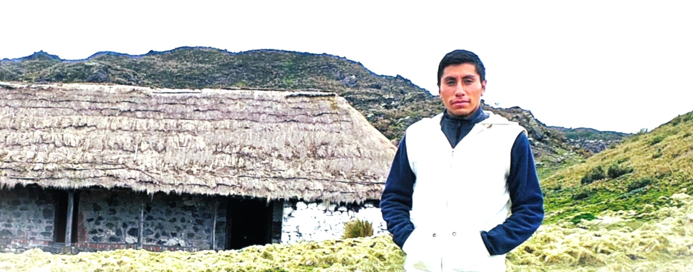
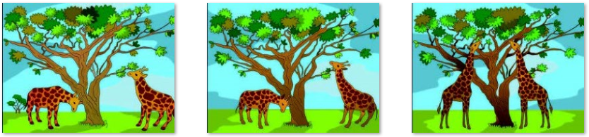

Teorías científicas sobre la evolución biológica 2
Fecha de publicación
septiembre, 2025
Completar esta clase te permitirá:
CN.B.5.1.6. Establecer las principales evidencias de las teorías científicas sobre la evolución biológica y analizar sobre el rol de la evolución con el proceso responsable del cambio y diversificación de la vida en la Tierra.

Profesor: Marcelo Amores Palma
Piensa por un momento, si todos los días te colgaras de una barra y te estiraras mucho, ¿crees que esto podría hacer que tus futuros hijos sean más altos que tú? Seguramente ya tienes ideas sobre cómo se transmiten las características de padres a hijos, y algunas de ellas pueden estar basadas en lo que has aprendido o escuchado. Hoy vamos a conectar esos conocimientos previos con las investigaciones de grandes naturalistas como Lamarck, Darwin, Wallace y Owen. Reflexionaremos sobre cómo ellos estudiaron la vida, cómo formularon sus teorías y cómo sus descubrimientos nos ayudan a entender cómo los seres vivos cambian y se adaptan a lo largo del tiempo.
Desequilibrio cognitivo. Si los seres vivos estamos evolucionando constantemente, ¿significa que somos mejores que los que ya desaparecieron?
Lamarck y su idea de la evolución
En 1809 se publica el libro de Lamarck llamado Filosofía Zoológica, donde se expone la revolucionaria idea de la transformación de las especies para adaptarse a situaciones más complejas que les presenta el medio.

Su postura se basa en dos principios: el primero que se conoce como la “herencia de caracteres adquiridos”, plantea que los cambios que experimentan los organismos responden a necesidades de supervivencia, como en el caso de la jirafa, que para evitar la competencia con otros herbívoros adquiere gradualmente un cuello más largo que le permite ramonear las copas de los árboles. En otras palabras, un órgano más sencillo se especializa para acomodarse a nuevas condiciones de vida. Estos caracteres adquiridos, según Lamarck, serían posteriormente transmitidos a las siguientes generaciones. Ahora sabemos que no es así como funciona la herencia.
Una vez que Darwin regresó de su viaje con el Beagle, en 1936, empezó el largo trabajo de poner en orden, clasificar y analizar las colecciones de los organismos que trajo, pero sobre todo, de sus ideas.
Continuando con el ejemplo de las jirafas, el siguiente ejemplo esquematiza la teoría de Darwin. Los antecesores de las jirafas actuales formaban una población con cierta variabilidad para el carácter «longitud del cuello»; ciertos individuos tenían el cuello más largo. Cuando escasea el alimento, los individuos con el cuello más largo llegan mejor a las capas superiores del follaje. Están mejor adaptados. Los individuos con el cuello más largo se reproducirán con mayor facilidad y dejarán más descendientes, aumentando su proporción en la siguiente generación. La selección natural seguirá actuando generación tras generación hasta dar lugar a las jirafas actuales.
Por consejo de su amigo Lyell, encontró la solución para honrar la confianza de Wallace y, al mismo tiempo, hacer que se reconozca su trabajo pionero. El primero de julio de 1858 se leyó, en una reunión de la Sociedad Linneana de Londres, un boceto de Darwin y luego el trabajo de Wallace: los documentos donde presentaban la idea de la selección natural como mecanismo que permitía el origen y evolución de las especies.
A breves rasgos, la selección natural explica que la evolución se produce porque en toda población hay variaciones en las características de los individuos. Algunas de estas variaciones se heredan de padres a hijos y, si de alguna manera confieren al individuo una mayor ventaja reproductiva o una mejor estrategia para vencer en la lucha por la supervivencia, con el tiempo estarían mejor representadas en la población; luego de muchas generaciones, podrían hasta generar una nueva especie.
Por el contrario, las variaciones que no otorgan ventajas pueden permanecer silenciosas (mantenerse sin efectos perceptibles) hasta que las condiciones ambientales les favorezcan, o pueden perderse con el transcurso del tiempo.
Impacto de la teoría de Darwin y Wallace
La teoría de la evolución rápidamente generó tantos detractores como defensores, pues la mayor dificultad que enfrentó fue el no poder explicar cómo se producen las variaciones de características, al no conocerse la existencia de los genes.
Para profundizar en los contenidos y alcanzar los objetivos de aprendizaje, te invito a tomar tu clase personalizada. No dudes en dejar tus preguntas y comentarios, así como seguirnos en todas nuestras redes. ¡Hasta pronto!